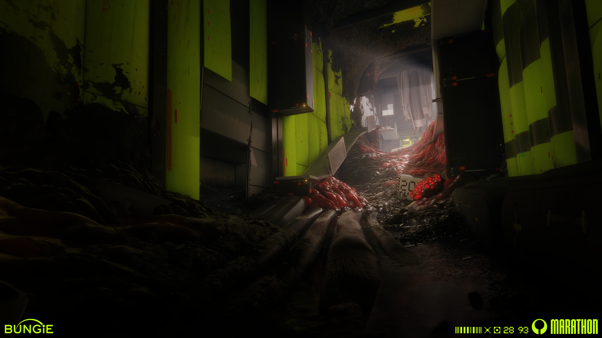
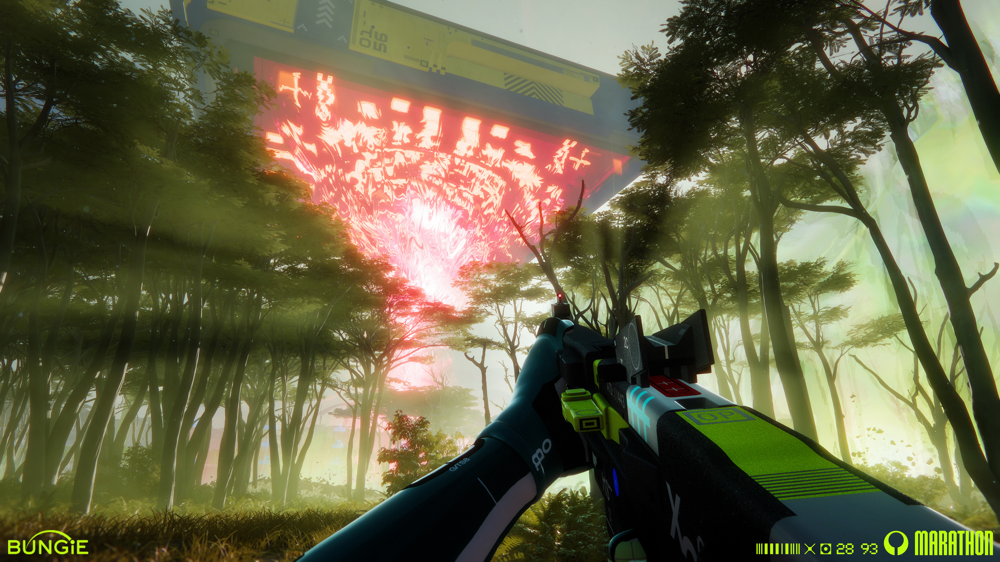

Trong MARATHON (2026), kiến trúc không chỉ đóng vai trò tạo nên không gian gameplay mà còn phản ánh lịch sử và mục đích sử dụng của từng địa điểm. Các công trình công nghiệp, hành lang, phòng chức năng và khu vực bỏ hoang thể hiện dấu vết hoạt động của con người trên Tau Ceti IV. Tiêu biểu là Cryo Archive trên con tàu UESC Marathon, nơi cấu trúc các khoang và khu vực chức năng gợi nhắc đến hành trình đưa con người đến định cư trên hành tinh này.

Sự tương phản giữa kiến trúc nhân tạo và hệ sinh thái ngoài hành tinh góp phần thể hiện mối quan hệ giữa con người với Tau Ceti IV. Trong khi công trình của con người mang tính công nghiệp, có tổ chức và thể hiện khả năng kiểm soát, môi trường tự nhiên lại mang tính hữu cơ, xa lạ và khó đoán. Sự đối lập này tạo cảm giác con người đang tồn tại trong một thế giới mà họ chưa hoàn toàn hiểu rõ hoặc kiểm soát được.

Environmental Storytelling được tích hợp trực tiếp vào quá trình khám phá bản đồ. Người chơi tiếp nhận thông tin thông qua việc quan sát kiến trúc, tìm kiếm vật thể và thu thập dữ liệu trong môi trường. Vì vậy, hoạt động khám phá không chỉ phục vụ mục tiêu gameplay mà còn giúp người chơi từng bước tìm hiểu lịch sử và bối cảnh của thế giới trò chơi.
Đọc hiểu lịch sử công trình qua dấu vết thời gian và bố cục không gian.
Thu thập các hiện vật và công cụ phản ánh đời sống dân cư cũ.
Truy cập các máy trạm để khôi phục nhật ký và dữ liệu lịch sử.
Environmental Storytelling trong MARATHON (2026) góp phần xây dựng chiều sâu cho thế giới khoa học viễn tưởng trên Tau Ceti IV. Thông qua kiến trúc, vật thể, dấu tích và hệ sinh thái ngoài hành tinh, môi trường trở thành phương tiện truyền tải cảm xúc và thông tin.